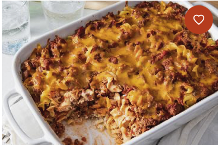

Grandma's Ground Beef Casserole
My grandmother's old-fashioned hamburger casserole is comfort food at its best! Featuring ground beef, noodles, and a creamy cheese sauce, this simple recipe dates back to the 1940's. I've tweaked the amount of cheese and sour cream depending on what I've got in the fridge and it always turns out great! My mother has suggested this was made up as a way to use up ingredients in the fridge.

Intructions
- Heat a large skillet over medium-high heat. Cook and stir ground beef in the hot skillet until browned and crumbly, 5 to 7 minutes; drain and discard grease.
- Mix tomato sauce, sugar, garlic salt, and salt into the ground beef; simmer until flavors blend, about 20 minutes. Remove from the heat, cover the skillet, and cool to room temperature.
- While the sauce is cooking, bring a large pot of lightly salted water to a boil. Cook egg noodles in the boiling water, stirring occasionally until cooked through but firm to the bite, 7 to 9 minutes. Drain.
- While the egg noodles are cooking, preheat oven to 350 degrees F (175 degrees C). Grease a 9x13-inch casserole dish.
- Mix sour cream, cream cheese, and onion together in a bowl.
- Layer 1/2 of the egg noodles into the prepared casserole dish. Top with 1/2 of the sour cream mixture, then 1/2 of the ground beef mixture. Repeat layers once more. Sprinkle Cheddar cheese over top.
- Bake in the preheated oven until cheese is melted and golden brown, 25 to 30 minutes.